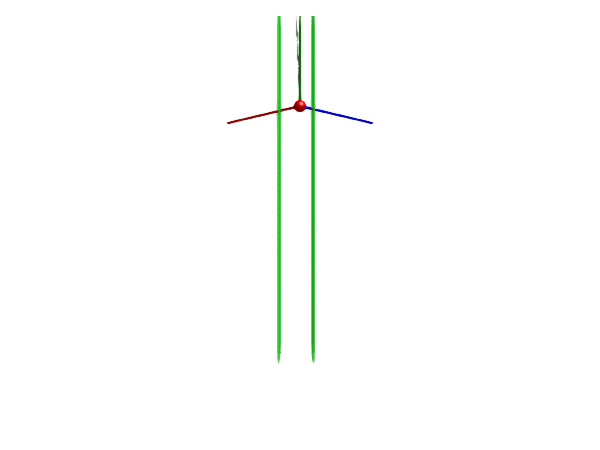

Quadrotor with cable-suspended load

This example builds a simple model of a quadrotor that carries a load suspended by a cable. The quadrotor has four arms, each with a thruster at the end. The quadrotor is controlled by three PID controllers: one for altitude, one for roll, and one for pitch (for simplicity, no position controller is included here).
The main body of the aircraft is modeled using a Body, and the arms are modeled using BodyCylinder components. The total inertia of the body and arms are automatically computed using the geometry and density properties of the bodies involved. The thrusters are modeled using a custom component called Thruster that applies a force in the y-direction. The thruster model is kinematical only, and does not model the rotation dynamics of the motors or any aerodynamics. The quadrotor is connected to the world frame using a FreeMotion joint, which allows the quadrotor to move freely in space.
using Multibody
using ModelingToolkit
using ModelingToolkitStandardLibrary.Blocks
using LinearAlgebra
using Plots
using JuliaSimCompiler
using OrdinaryDiffEq
using Test
t = Multibody.t
D = Differential(t)
world = Multibody.world
num_arms = 4 # Number of arms of the rotor craft.
angle_between_arms = 2*pi/num_arms # Angle between the arms, assuming they are evenly spaced.
arm_length = 0.2 # Length of each arm.
arm_outer_diameter = 0.03
arm_inner_diameter = 0.02
arm_density = 800 # Density of the arm [kg/m³].
body_mass = 0.2 # Mass of the body.
load_mass = 0.1 # Mass of the load.
cable_length = 1 # Length of the cable.
cable_mass = 0.1 # Mass of the cable.
cable_diameter = 0.01 # Diameter of the cable.
number_of_links = 5 # Number of links in the cable.
# Controller parameters
kalt = 1
Tialt = 3
Tdalt = 3
kroll = 0.02
Tiroll = 100
Tdroll = 1
kpitch = 0.02
Tipitch = 100
Tdpitch = 1
@mtkmodel Thruster begin
@components begin
frame_b = Frame()
thrust3d = WorldForce(resolve_frame = :frame_b, scale=0.1, radius=0.02) # The thrust force is resolved in the local frame of the thruster.
thrust = RealInput()
end
@variables begin
u(t), [state_priority=1000]
end
@equations begin
thrust3d.force.u[1] ~ 0
thrust3d.force.u[2] ~ thrust.u
thrust3d.force.u[3] ~ 0
thrust.u ~ u
connect(frame_b, thrust3d.frame_b)
end
end
function RotorCraft(; closed_loop = true, addload=true)
arms = [
BodyCylinder(
r = [arm_length*cos(angle_between_arms*(i-1)), 0, arm_length*sin(angle_between_arms*(i-1))],
diameter = arm_outer_diameter,
inner_diameter = arm_inner_diameter,
density = arm_density,
name=Symbol("arm$i"),
) for i = 1:num_arms
]
@variables begin
y_alt(t)
y_roll(t)
y_pitch(t)
end
thrusters = [Thruster(name = Symbol("thruster$i")) for i = 1:num_arms]
@named body = Body(m = body_mass, state_priority = 0, I_11=0.01, I_22=0.01, I_33=0.01, air_resistance=1)
@named freemotion = FreeMotion(state=true, isroot=true, quat=false) # We use Euler angles to describe the orientation of the rotorcraft.
connections = [
connect(world.frame_b, freemotion.frame_a)
connect(freemotion.frame_b, body.frame_a)
y_alt ~ body.r_0[2]
y_roll ~ freemotion.phi[3]
y_pitch ~ freemotion.phi[1]
[connect(body.frame_a, arms[i].frame_a) for i = 1:num_arms]
[connect(arms[i].frame_b, thrusters[i].frame_b) for i = 1:num_arms]
]
systems = [world; arms; body; thrusters; freemotion]
if addload
@named load = Body(m = load_mass, air_resistance=0.1)
@named cable = Rope(
l = cable_length,
m = cable_mass,
n = number_of_links,
c = 0,
d = 0,
air_resistance = 0.1,
d_joint = 0.1,
radius = cable_diameter/2,
color = [0.5, 0.4, 0.4, 1],
dir = [0.0, -1, 0]
)
push!(systems, load)
push!(systems, cable)
push!(connections, connect(body.frame_a, cable.frame_a))
push!(connections, connect(cable.frame_b, load.frame_a))
end
if closed_loop # add controllers
# Mixing matrices for the control signals
@parameters Galt[1:4] = ones(4) # The altitude controller affects all thrusters equally
@parameters Groll[1:4] = [-1,0,1,0]
@parameters Gpitch[1:4] = [0,1,0,-1]
@named Calt = PID(; k=kalt, Ti=Tialt, Td=Tdalt)
@named Croll = PID(; k=kroll, Ti=Tiroll, Td=Tdroll)
@named Cpitch = PID(; k=kpitch, Ti=Tipitch, Td=Tdpitch)
uc = Galt*Calt.ctr_output.u + Groll*Croll.ctr_output.u + Gpitch*Cpitch.ctr_output.u
uc = collect(uc)
append!(connections, [thrusters[i].u ~ uc[i] for i = 1:num_arms])
append!(connections, [
Calt.err_input.u ~ -y_alt
Croll.err_input.u ~ -y_roll
Cpitch.err_input.u ~ -y_pitch
])
append!(systems, [Calt; Croll; Cpitch])
#=
# append!(connections, [thrusters[i].thrust.u ~ feedback_gain.output.u[i] for i = 1:num_arms])
# append!(connections, [feedback_gain.input.u[i] ~ arms[i].frame_b.r_0[2] for i = 1:num_arms ]) # Connect positions to controller
# append!(connections, [feedback_gain.input.u[i+num_arms] ~ D(arms[i].frame_b.r_0[2]) for i = 1:num_arms]) # Connect velocities to controller
# append!(connections, [feedback_gain.input.u[i+2num_arms] ~ Ie[i] for i = 1:num_arms]) #
# append!(connections, [feedback_gain.input.u[i] ~ freemotion.phi[[1,3][i]] for i = 1:2 ]) # Connect positions to controller
# append!(connections, [feedback_gain.input.u[i+2] ~ freemotion.phid[[1,3][i]] for i = 1:2]) # Connect velocities to controller
# push!(systems, feedback_gain)
=#
end
@named model = ODESystem(connections, t; systems)
complete(model)
end
model = RotorCraft(closed_loop=true, addload=true)
ssys = structural_simplify(IRSystem(model))
op = [
model.body.v_0[1] => 0;
collect(model.cable.joint_2.phi) .=> 0.03;
model.world.g => 2;
# model.body.frame_a.render => true
# model.body.frame_a.radius => 0.01
# model.body.frame_a.length => 0.1
]
prob = ODEProblem(ssys, op, (0, 20))
sol = solve(prob, FBDF(autodiff=false), reltol=1e-8, abstol=1e-8)
@test SciMLBase.successful_retcode(sol)
plot(sol, idxs=[model.arm1.frame_b.r_0[2], model.arm2.frame_b.r_0[2], model.arm3.frame_b.r_0[2], model.arm4.frame_b.r_0[2]], layout=4, framestyle=:zerolines)import GLMakie
render(model, sol, 0:0.1:sol.t[end], x=-3, z=-3, y=-1, lookat=[0,-1,0], show_axis=false, filename="quadrotor.gif", framerate=25)The green arrows in the animation indicate the force applied by the thrusters.